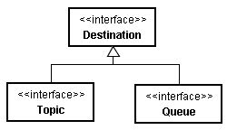
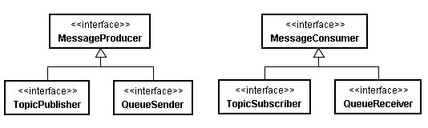
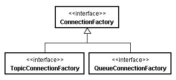
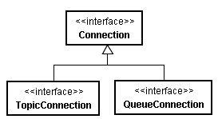

Java Message Service（JMS）是由Sun與MOM廠商所共同制定的介面，定義了訊息的傳送、接收、頻道（Channel）、主題（Topic）、佇列 （Queue）等標準介面，實作部份由廠商完成，Java開發人員只要學習標準API介面的使用，就可以利用各廠商的JMS支援系統來進行訊息傳送、接收 等處理（您可以想像JDBC與資料庫廠商之間的關係）。
在JMS當中，頻道是用Destination這個介面來定義，在 訊息（Message）觀念 中提及，訊息服務有出版-訂閱（Publish-Subscribe）與點對點（Point-to-Point）兩種模式，而頻道分為主題與佇列，因此，Destination有兩個子介面Topic與Queue來分別代表。

而JMS中對於訊息產生者、訊息消費者的定義則分別為MessageProducer與MessageConsumer介面，而在兩種模式下，分別有發佈 者（Publisher）、傳送者（Sender），以及訂閱者（Subscriber）、接收者（Receiver），這分別都定義為MessageProducer的子介面TopicPublisher、QueueSender，以及MessageConsumer的子介面TopicSubscriber、QueueReceiver來定義。

伺服端必須設定好ConnectionFactory以及Destination，JMS端點取得ConnectionFactory，使用其與伺服端建立連線，連線以Connection介面定義。
根據兩種模式的不同，ConnectionFactory有TopicConnectionFactory、QueueConnectionFactory兩個子介面：

而Connection有TopicConnection、QueueConnection兩個子介面的定義：

伺服端要事先設定好ConnectionFactory及Destination，並分別使用一個名稱向JNDI註冊，端點必須使用JNDI名稱查找ConnectionFactory及Destination，以點對點模式為例：
Context context = new InitialContext();
ConnectionFactory someFactory =
(ConnectionFactory) context.lookup("jms/SomeQueueConnectionFactory");
Destination someQueue =
(Destination) context.lookup("jms/SomeQueue");
ConnectionFactory someFactory =
(ConnectionFactory) context.lookup("jms/SomeQueueConnectionFactory");
Destination someQueue =
(Destination) context.lookup("jms/SomeQueue");
而後使用ConnectionFactory取得Connection物件，實際建立連線時，使用Connection建立Session物件，代表該次的會話：
Connection connection = someFactory.createConnection();
Session session = connection.createSession(false, Session.AUTO_ACKNOWLEDGE);
Session session = connection.createSession(false, Session.AUTO_ACKNOWLEDGE);
createSession()時，第一個參數代表是否參與交易，第二個參數代表自動回覆確認。
若是訊息產生者，則可以使用Session物件，指定要使用哪個Destination來建立MessageProducer的實例，例如：
MessageProducer producer = session.createProducer(someQueue);
在JMS中，定義有幾種訊息，它們都實作Message介面：
- BytesMessage
- MapMessage
- ObjectMessage
- StreamMessage
- TextMessage
Session物件提供有createXXXMessage()等方法，以建立相對應的訊息，以建立TextMessage並傳送為例：
TextMessage message = sesion.createTextMessage();
message.setText("Hello!JMS!");
producer.send(message);
message.setText("Hello!JMS!");
producer.send(message);
在訊息中包括主體（Body），如以上的文字部份就是屬於主體部份，訊息還包括了標頭（Header），您可以利用訊息物件的setXXXSProperty()來設定，用getXXXProperty()來取得標頭部份。
在訊息消費者部份，同樣的要建立Session物件，之後使用Session建立MessageConsumer實例：
MessageConsumer consumer = session.createConsumer(someQueue);
在啟動連線之後，可以使用receive()方法直接接收訊息：
Message message = consumer.receive();
receive()是同步的，你可以指定其接收訊息時等待的毫秒數，另一個方式是指定MessageListener，您可以實作其onMessage()方法，例如：
public class MessageListenerImpl implements MessageListener {
public void onMessage(Message message) {
....
}
}
public void onMessage(Message message) {
....
}
}
在啟動連線之前，建立並指定MessageListener：
consumer.setMessageListener(new MessageListenerImpl());
當收到訊息時，就會自動呼叫onMessage()方法，如此可以非同步的方式來處理訊息。